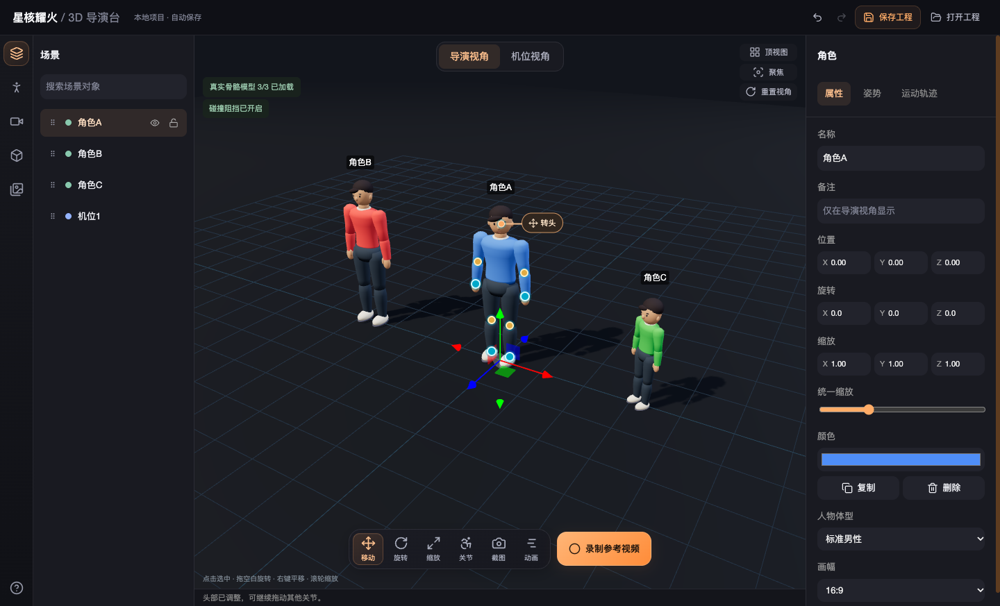

星核耀火 · 3D 导演台
网页版使用说明。用人物、道具和摄像机排演一个镜头，再把画面导出给团队参考。第一次使用，建议用电脑浏览器打开。

左侧选对象，中间摆场景，右侧改属性。底部「动画」展开时间轴。
跟做：拍一条 4 秒的踢腿镜头
- 摆人物。在左侧点「角色A」，用「移动」箭头把人物摆到空地。滚轮调整观察距离，按 F 聚焦选中的人物。
- 做动作。进入「姿势」，选「踢球」。拖动手、脚圆点微调，拖头旁的「转头」杆调整视线。点「把当前姿势做成动作」。这会生成一个从站立进入该姿势再回到站立的片段。
- 设置时间。点动作条，把「片段时长」设为 4 秒。将条拖到时间轴起点，并把「总时长」设为 4 秒。总时长至少要覆盖最后一个片段。
- 选镜头。选「机位1」，将「注视对象」设为角色A，选择「推近」并添加运镜片段。把运镜条和踢腿条的起点对齐，时长也设为 4 秒。
- 拍摄。切到「机位视角」播放检查构图，再点「录制参考视频」。录像从时间轴起点开始，到结尾自动停止；也可以手动停止。只要一张画面时，拖播放头到目标时刻，点「截图」。
走位和剪辑
- 选人物 →「运动轨迹」→「铅笔画轨迹」。按住地面拖动画线，松开可续画，点「完成」保存。「撤回一笔」可重画上一笔。
- 左右拖动片段改变发生时间；上下拖动名称旁的 ⠿ 调整列表顺序。改颜色用于区分片段。分割时，先选中片段，再把播放头移到片段内，两侧各留至少 0.2 秒。
- 右键左侧角色可删除。选「旋转」后拖圆环让人物转身；「缩放」按整个人物同比例调整。在画面上右键头部或肢体控制点，可以单独放大、缩小该部位。场景名称和备注只在导演视角显示。碰撞提示出现时，先拉开人与道具的间距，再调整动作或路线。
保存与交付
- 继续编辑或交给同事
- 点「保存工程」下载 JSON。同事打开导演台后点「打开工程」导入。
- 交付截图或视频
- 在左侧「参考素材」下载 PNG 截图和视频。视频格式由浏览器决定，可能是 MP4 或 WebM。工程 JSON 不包含这些素材，请分别下载。
- 关掉网页之后
- 自动保存和素材保存在当前浏览器。换设备、使用无痕窗口或清除站点数据时，请先备份工程和素材。分享网页链接会打开工具；要分享同一个场景，请同时发送工程 JSON。